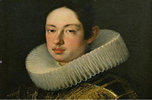

|
|
 |
14 luglio 1641
domenica
TORRE
|
- prima di iniziare la lettura, si consiglia di leggere l'introduzione -
Dopo quello del 1633, questo è il primo Palio del quale possiamo fornire notizie un po' meno vaghe; ad esempio sappiamo che il giorno prescelto fu quello del 31° compleanno di Ferdinando II, Governatore della Toscana1.
A organizzarlo ci pensò il Principe Mattias de’Medici. Egli aveva lasciato Siena nel 1631 per partecipare alla Guerra dei Trent’anni2 combattendo a fianco degli Asburgo, e rientrato in città nel marzo del 1641 cercò di creare, coinvolgendo le Contrade, delle feste dinastiche facendo correre dei Palii alla tonda per il compleanno del fratello Ferdinando II e per il suo che cadeva il 9 maggio.
La data è avvalorata da un verbale della Contrada dell'Onda del 10 luglio3, che faceva seguito a quello che aveva stabilito il giorno prima la Balia, affermando che "Domenica prossima, giorno natale del Serenissimo Gran Duca, si honori la detta nascita di Sua Altezza Sovrana con modo più singulare degl'altri anni, e che per ciò il detto Sig. Principe si compiace con correre alle dette dimostrazioni d'allegrezza con mettere del proprio un Palio di drappo, da farlo correre alle Contrade con i cavalli per la pubblica piazza"4 .
Vinse la Torre, come afferma con dovizia di particolari, pur tralasciando il nome del fantino vincitore, il veritiero diario manoscritto di Luca Holstein, "Iter per Hetruriam", dove è pure puntualizzato che alla carriera, parteciparono otto Contrade: Onda, Lupa, Selva, Civetta, Nicchio, Tartuca, Torre e Giraffa, descrivendone i colori. L’Onda era “biancho e nero ondeggiante”; la Lupa bianco e nero per quarti; la Selva bianco e verde; la Civetta rosso e bianco; “la Nicchia” rosso, turchino e bianco; “la Tartaruga” giallo e nero; la Torre rosso e giallo; la Giraffa “bianco in croce”.
Il diario continua con la cronaca della corsa, mettendoci a conoscenza che "delli 8 cavalli cascorno 5 nella calata inanzi al Pallazzo; et il Palio lo guadagnò la Torre. Finito il corso, Sua Altezza cavalcò di nuovo intorno per la città fino a notte”5.
E' singolare che la Torre non si riconosca ancora questo Palio, alla quale l'Oca, con delibera del 10 luglio, decise di non "concorrere"6, come risultato della votazione di "45 lupini neri e 9 bianchi"7.

Ferdinando II all'età di 18 anni
NOTE:
[1] Figlio di Cosimo II e di Maria Maddalena d'Austria, fu molto amato dai sudditi per il suo carattere umile e semplice. Si sposò con Maddalena della Rovere dalla quale ebbe Francesco Maria, futuro Cardinale e Governatore di Siena.
[2] Questa guerra durò dal maggio 1618 al maggio 1648 e fu una delle più lunghe, cruente e distruttive della storia europea, combattuta dagli Stati Centrali del nostro continente.
[3] ACOn, Libro secondo di deliberazioni 1604-1673, cc. 40v e 41
[4] ASS. Balia 198, cc, 16v e 24v
[5] SLUB, F 192, Luca Holstein, Iter per Hetruriam, ms, c. 12 e 12v
[6] ACOc, Deliberazioni 1601-1645, libro A, c. 382
[7] I lupini erano una varietà di fagioli usati per votare: bianco a favore, nero contrario.

ABBREVIAZIONI BIBLIOGRAFICHE


RIEPILOGO
VITTORIE
DAL 1633
AL 1691

|
|
|